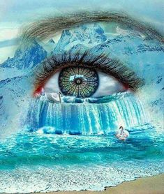
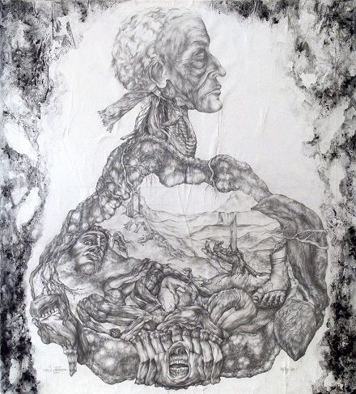
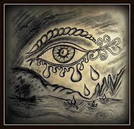
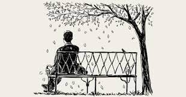

The tear drops withdrew only to gush out at the end
and the fire of love did it only to become ablaze.
I am obliged to the ruins that I won't water a cloud of rains on them
I have never failed short in responding to the people of Rabi'
But when I asked for something I did not get any reply.
I saw the whiteness in my hair that came out and I said "hey there!"
and I bade farewell to naiveness and youthness.
I never got whitened out of aging but I found my friends got all aged because of that.
Turkish
Gözyaşları tuttu kendini derken sel gibi dökülüverdi
Ateş bu buram buram aşk tuttu kendini derken bir kor gibi körüklendi.
Viran evlerin hakkı var üstümde bir yağmur bulutu gibi gelmeyim üstüne
Rebi'lerin bir dediğini iki etmedim ama onlar ne istedimse dönmediler bana.
Anladım halimi başıma düşen aklara dedim ki dedim ki "hoşgeldin!"
Sonra da veda ettim budala halime ve gençliğime
Benim yaşımdan hiç başım ağarmadı gördüm ama dostlarımın saçları öyle ağardı.
أَبَت عَبَراتُهُ إِلّا اِنسِكابا
Abat a‘barâtuhû illa insikâbân أَبَت عَبَراتُهُ إِلّا اِنسِكابا

وَنارُ غَرامِهِ إِلّا اِلتِهابا
Wa nâru gharâmihi illa iltiḥâbân وَنارُ غَرامِهِ إِلّا اِلتِهابا
وَمِن حَقِّ الطُلولِ عَلَيَّ أَلّا
wa min ḥaqq al-ṭulûl a‘layya alla وَمِن حَقِّ الطُلولِ عَلَيَّ أَلّا

أُغِبَّ مِنَ الدُموعِ لَها سَحابا
ughibba min al-dumû‘i lahâ saḥâbân أُغِبَّ مِنَ الدُموعِ لَها سَحابا

وَما قَصَّرتُ في تَسآلِ رَبعٍ
wa ma qassartu fî tas'âl(i) Rabi‘ وَما قَصَّرتُ في تَسآلِ رَبعٍ
وَلَكِنّي سَأَلتُ فَما أَجابا
wa lâkinnî sa'altu fa-mâ ajâbâ وَلَكِنّي سَأَلتُ فَما أَجابا
